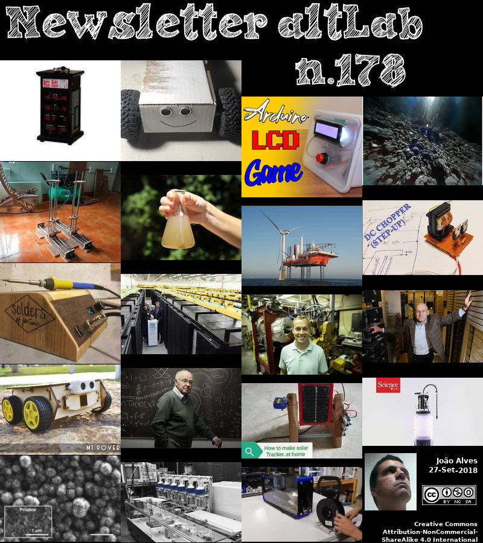

2018-09-27 - Nº 178


Editorial
Esta é a Newsletter Nº 178 que se apresenta com o mesmo formato que as anteriores. Se gostar da Newsletter partilhe-a!
Todas as Newsletters encontram-se indexadas no link.
Esta Newsletter tem os seguintes tópicos:
Faz hoje anos que nascia, em 1818, Hermann Kolbe. Este químico alemão realizou a primeira síntese geralmente aceite de um composto orgânico a partir de materiais inorgânicos. Enquanto trabalhava no seu doutorado, ele também conseguiu produzir ácido acético a partir de compostos inorgânicos, o que, de acordo com as doutrinas do vitalismo, era impossível. Em 1859, ele conseguiu usar fenol e dióxido de carbono para produzir ácido salicílico, o que levou à produção mais barata de ácido acetilsalicílico, ou aspirina. As duas reacções vieram a ser chamadas de síntese de Kolbe.
Faz igualmente anos hoje que nascia, em 1849, Ivan Pavlov. Este Fisiologista russo foi agraciado com o Prémio Nobel de 1904 em Fisiologia ou Medicina. Ele foi o pioneiro da investigação que ele designou de "reflexo condicionado". Na experiência que o tornou famoso, ele treinou um cachorro faminto para associar o som de um sino ao receber comida. Depois disso, o cachorro salivaria ao ouvir o sino sozinho. Este trabalho começou como um mero estudo da digestão, com uma série de experiências em cães para investigar como as secreções digestivas são reguladas. Ele identificou três estímulos que causaram cães a começar a salivar: ver, cheirar ou saborear comida. Ele percebeu que a digestão é parcialmente controlada por estímulos sensoriais. Em 1903, Pavlov publicou seus resultados sobre essa aprendizagem - "reflexo condicionado" (em oposição a um reflexo inato, como uma reacção à dor).
Por fim, faz hoje anos que nascia, em 1918, Martin Ryle. Este radioastronomo inglês trabalhou no radar para a defesa britânica em tempo de guerra. Após a Segunda Guerra Mundial, ele tornou-se um líder no desenvolvimento da radioastronomia, projectando sistemas de radiotelescópios revolucionários para usar na localização precisa de fontes de rádio fracas. Com a sua técnica de síntese de abertura de interferometria, ele e sua equipa localizaram regiões de emissão de rádio no sol e identificaram outras fontes de rádio para que pudessem ser estudadas sob luz visível. Ryle observou as galáxias mais distantes conhecidas do universo. Os seus catálogos de fontes de rádio 1C-5C de Cambridge levaram à descoberta de numerosas galáxias de rádio e quasares. Pela sua técnica de síntese de abertura, Ryle dividiu o Prémio Nobel de Física de 1974 (com Antony Hewish), o primeiro reconhecimento de pesquisa astronómica.
Nesta semana que passou os dois primeiros rovers transportados pela nave Hayabusa 2 operada pela agência japonesa JAXA começaram a explorar a superfície do asteróide 162173 Ryugu. Este asteróide tem aproximadamente 1 km de diâmetro. Os rovers 1A e 1B cada um com cerca de um 1 Kg começaram a enviar imagens da superfície do asteróide captadas a partir das suas câmaras especiais. Este asteróide pensa-se que seja uma relíquia remanescente dos primeiros dias do nosso Sistema Solar, o seu estudo poderá esclarecer a origem e a evolução do nosso próprio planeta.
Também esta semana a MHI Vestas apresentou o seu sistema eólico V164. Sendo uma plataforma colocada no mar os números são impressionantes. Tem um rotor com o diâmetro de 164 metros e pás de 80 metros, pesando cada uma 35 toneladas. Uma turbina tem a capacidade de alimentar cerca de 5,977 casas alemãs.
Na Newsletter desta semana apresentamos diversos projetos de maker. São apresentadas as revistas MagPi nº74 e a newelectronics de 25 de Setembro.
 João Alves ([email protected])
João Alves ([email protected])
O conteúdo da Newsletter encontra-se sob a licença  Creative Commons Attribution-NonCommercial-ShareAlike 4.0 International License.
Creative Commons Attribution-NonCommercial-ShareAlike 4.0 International License.
Novidades da Semana
Hayabusa 2 rovers send new images from Ryugu surface
"The photos reveal new details of the surface of the space rock, which is known as Ryugu. On 21 September, the rovers were released on to the surface by the "mothership", Hayabusa 2. Hayabusa 2 reached Ryugu in June after a three-and-a-half-year journey. The pictures show in clear relief the rugged, boulder-strewn landscape of this striking Solar System body. The robots, known as Rover 1A and Rover 1B, are now both confirmed to be working on the surface of the space rock. The 1kg autonomous rovers move about by hopping, using the asteroid's low gravity." [...]
MHI Vestas claims industry first as it unveils huge wind turbine
"The V164-10.0 MW has a rotor diameter of 164 meters and 80 meter blades, which weigh 35 tons each. MHI Vestas is a joint venture between Vestas Wind Systems and Mitsubishi Heavy Industry. MHI Vestas Offshore Wind has launched what it describes as the wind industry's "first commercially available double-digit wind-turbine." Launched Tuesday, the scale of the turbine is considerable. The V164-10.0 MW has a rotor diameter of 164 meters and 80 meter blades, which weigh 35 tons each. One turbine is able to power 5,977 German homes." [...]
Outras Notícias
Net successfully snares space debris
"The RemoveDEBRIS satellite has successfully used its on-board net technology in orbit – the first demonstration in human history of active debris removal (ADR) technology. The spacecraft began the experimental phase of its mission on Sunday 16 September, when it used a net to capture a deployed target simulating a piece of space debris. RemoveDEBRIS was designed, built and manufactured by a consortium of leading space companies and research institutions led by the Surrey Space Centre at the University of Surrey. The spacecraft is operated in orbit by engineers at Surrey Satellite Technology Ltd in Guildford, UK. The project is co-funded by the European Commission. Professor Guglielmo Aglietti, Director of the Surrey Space Centre, said: “We are absolutely delighted with the outcome of the net technology." [...]
Fujitsu Develops Platform Technology to Support High Speed Processing of Massive Data in Distributed Storage
"Fujitsu Laboratories Ltd. today announced that it has developed a technology that offers both high speed data-processing and high-capacity storage in distributed storage systems, in order to speed up the processing of ever-increasing volumes of data. Recently, customers have looked for improvements in processing speed in storage systems that handle everything up to data analysis. This is in response to a growing need in such technologies as AI and machine learning for the analysis and utilization of rapidly growing volumes of data, including unstructured data, such as video and log data. However, this requires storage systems that can efficiently analyze unstructured data stored in a distributed system, while providing their original storage functionality for data management as well as data processing capabilities. Fujitsu Laboratories has now developed "Dataffinic Computing," a technology for distributed storage systems that handles data processing while also fulfilling their original storage function, in order to speed up the processing of large volumes of data. With this technology, storage systems can process large volumes of data at high speeds, including unstructured data, enabling the efficient utilization of the ever-increasing amounts of data, in such cases as utilizing security camera video, analyzing logs from ICT systems, utilizing sensor data from cars, and analyzing genetic data." [...]
Arm Mbed OS 5.10 Release: Focus on connectivity, firmware management and ease of use
"About this release In Mbed OS 5.10 we are improving the firmware update user experience. Mbed OS provides integrated firmware over-the-air (OTA) update capability, enabled by Pelion Device Management. Mbed OS now makes this process seamless, providing secure and flexible IoT firmware update, and device management capabilities right from Arm Mbed CLI tool itself. Bluetooth Low Energy (BLE) is quickly becoming the IoT connectivity protocol of choice for a variety of use cases. In Mbed OS 5.10, we are launching Arm Mbed Cordio stack, the world’s first open-source, fully-qualified and production-ready BLE software stack, which supports BLE 5, giving developers even more flexibility when developing new IoT solutions with BLE connectivity. Security is the most important challenge for IoT developers." [...]
Intel Adds to Portfolio of FPGA Programmable Acceleration Cards to Speed Up Data Center Computing
"Intel today extended its field programmable gate array (FPGA) acceleration platform portfolio with the addition of the new Intel® Programmable Acceleration Card (PAC) with Intel® Stratix® 10 SX FPGA, Intel’s most powerful FPGA. This high-bandwidth card leverages the Acceleration Stack for Intel® Xeon® CPU with FPGAs, providing data center developers a robust platform to deploy FPGA-based accelerated workloads. Hewlett Packard Enterprise* will be the first OEM to incorporate the Intel PAC with Stratix 10 SX FPGA along with the Intel Acceleration Stack for Intel Xeon Scalable processor with FPGAs into its server offering. “We’re seeing a growing market for FPGA-based accelerators, and with Intel’s new FPGA solution, more developers – no matter their expertise – can adopt the tool and benefit from workload acceleration. We plan to use the Intel Stratix 10 PAC and acceleration stack in our offerings to enable customers to easily manage complex, emerging workloads.” –Bill Mannel, vice president and general manager, HPC and AI Group, HPE What It Does: Like the previously announced Intel PAC with Intel® Arria® 10 FPGA, this new Intel PAC with Stratix 10 SX FPGA supports an ecosystem of design partners that delivers IP to accelerate a wide range of application workloads. The Intel PAC with Stratix 10 SX FPGA is a larger form factor card built for inline processing and memory-intensive workloads, like streaming analytics and video transcoding." [...]
STMicroelectronics Unveils Highly Integrated Mobile-Security Chip Combining NFC Controller, Secure Element, and eSIM
"STMicroelectronics, a global semiconductor leader serving customers across the spectrum of electronics applications, revealed its highly integrated mobile-security solution, the ST54J , a system-on-chip (SoC) containing an NFC (Near-Field Communication) controller, Secure Element, and eSIM. The SoC delivers performance-boosting integration for mobile and IoT devices, with the added benefit of ST’s software-partner ecosystem for smoother user experiences in mobile payments and e-ticketing transactions, as well as more convenient, remote, mobile provisioning to support multiple operator subscriptions. “As mobile devices require more security and connectivity in an ever-shrinking PCB footprint, the ST54J will help designers simplify assembly and reduce bill-of-material costs,” said Laurent Degauque, Marketing Director, Secure Microcontroller Division, STMicroelectronics. “ST’s established ecosystem of third-party software partners provides access to eSIM and eSE solutions that are not only EMVCo and GSMA-SAS certifiable, but also tested for interoperability and validated with numerous Mobile Network Operators (MNOs), custom profiles and application providers worldwide.” Spearheading the fourth generation of ST’s proven embedded Secure Element family, the single-chip ST54J ensures faster contactless interaction than a discrete chipset by eliminating performance-limiting off-chip data exchanges between the Secure Element and NFC controller. In addition, a faster, state-of-the-art core for each function further accelerates contactless transactions with mobile terminals and enhances roaming by supporting secure-element cryptographic protocols used worldwide, including FeliCa® and MIFARE®. Packaging and design flexibility comes from the space savings of integrating three key functions onto a single chip." [...]
New Digital Signal Controller (DSC) Accelerates DSP Performance for Time-Critical Control Applications
"System designers looking for digital signal processing power with the design simplicity of a microcontroller (MCU) can now utilize a new family of 16-bit Digital Signal Controllers (DSCs) from Microchip Technology Inc. (Nasdaq: MCHP). Designed to deliver faster deterministic performance in time-critical control applications, the new dsPIC33CK DSCs have expanded context selected registers to reduce interrupt latency and new, faster instruction execution to accelerate Digital Signal Processor (DSP) routines. This dsPIC33CK single-core family complements the recently announced dsPIC33CH dual-core family based on the same core. With 100 MIPS performance, the core delivers almost double the performance of previous single-core dsPIC® DSCs, making it ideally suited for motor control, digital power and other applications requiring sophisticated algorithms such as automotive sensors and industrial automation. It has been designed specifically for controlling multiple sensorless, brushless motors running field-oriented control algorithms and power factor correction. The new DSCs are also designed to ease functional safety certification required by many automotive, medical and appliance applications where safe operation and shutdown in failure situations are critical." [...]
Ciência e Tecnologia
David Patterson Says It's Time for New Computer Architectures and Software Languages
"Moore’s Law is over, ushering in a golden age for computer architecture, says RISC pioneer David Patterson—University of California professor, Google engineer, and RISC pioneer—says there’s no better time than now to be a computer architect. That’s because Moore’s Law really is over, he says: “We are now a factor of 15 behind where we should be if Moore’s Law were still operative. We are in the post–Moore’s Law era.” This means, Patterson told engineers attending the 2018 @Scale Conference held in San Jose last week, that “we’re at the end of the performance scaling that we are used to. When performance doubled every 18 months, people would throw out their desktop computers that were working fine because a friend’s new computer was so much faster.” But last year, he said, “single program performance only grew 3 percent, so it’s doubling every 20 years. If you are just sitting there waiting for chips to get faster, you are going to have to wait a long time.” For a computer architect like Patterson, this is actually good news. It’s also good news for innovative software engineers, he pointed out." [...]
Scientists use artificial neural networks to predict new stable materials
"Artificial neural networks—algorithms inspired by connections in the brain—have “learned” to perform a variety of tasks, from pedestrian detection in self-driving cars, to analyzing medical images, to translating languages. Now, researchers at the University of California San Diego are training artificial neural networks to predict new stable materials. “Predicting the stability of materials is a central problem in materials science, physics and chemistry,” said senior author Shyue Ping Ong, a nanoengineering professor at the UC San Diego Jacobs School of Engineering. “On one hand, you have traditional chemical intuition such as Linus Pauling’s five rules that describe stability for crystals in terms of the radii and packing of ions. On the other, you have expensive quantum mechanical computations to calculate the energy gained from forming a crystal that have to be done on supercomputers. What we have done is to use artificial neural networks to bridge these two worlds.” By training artificial neural networks to predict a crystal’s formation energy using just two inputs—electronegativity and ionic radius of the constituent atoms—Ong and his team at the Materials Virtual Lab have developed models that can identify stable materials in two classes of crystals known as garnets and perovskites." [...]
New battery gobbles up carbon dioxide
"Lithium-based battery could make use of greenhouse gas before it ever gets into the atmosphere. A new type of battery developed by researchers at MIT could be made partly from carbon dioxide captured from power plants. Rather than attempting to convert carbon dioxide to specialized chemicals using metal catalysts, which is currently highly challenging, this battery could continuously convert carbon dioxide into a solid mineral carbonate as it discharges. While still based on early-stage research and far from commercial deployment, the new battery formulation could open up new avenues for tailoring electrochemical carbon dioxide conversion reactions, which may ultimately help reduce the emission of the greenhouse gas to the atmosphere. The battery is made from lithium metal, carbon, and an electrolyte that the researchers designed. The findings are described today in the journal Joule, in a paper by assistant professor of mechanical engineering Betar Gallant, doctoral student Aliza Khurram, and postdoc Mingfu He." [...]
Famed mathematician claims proof of 160-year-old Riemann hypothesis
"One of the most important unsolved problems in mathematics may have been solved, retired mathematician Michael Atiyah is set to claim on Monday. In a talk at the Heidelberg Laureate Forum in Germany, Atiyah will present what he refers to as a “simple proof” of the Riemann hypothesis, a problem which has eluded mathematicians for almost 160 years. Born in 1929, Atiyah is one of the UK’s most eminent mathematical figures, having received the two awards often referred to as the Nobel prizes of mathematics, the Fields medal and the Abel Prize. He also, at various times, served as president of the London Mathematical Society, the Royal Society and the Royal Society of Edinburgh. If a solution to the Riemann hypothesis is confirmed, it would be big news. Among other things, the hypothesis is intimately connected to the distribution of prime numbers, those indivisible by any whole number other than themselves and one." [...]
Rice U. study sheds light on - and through - 2D materials
"High-performance computing helps to survey optical qualities of atom-thick materials for optoelectronics. The ability of metallic or semiconducting materials to absorb, reflect and act upon light is of primary importance to scientists developing optoelectronics – electronic devices that interact with light to perform tasks. Rice University scientists have now produced a method to determine the properties of atom-thin materials that promise to refine the modulation and manipulation of light. Two-dimensional materials have been a hot research topic since graphene, a flat lattice of carbon atoms, was identified in 2001. Since then, scientists have raced to develop, either in theory or in the lab, novel 2D materials with a range of optical, electronic and physical properties. Until now, they have lacked a comprehensive guide to the optical properties those materials offer as ultrathin reflectors, transmitters or absorbers." [...]
Quantum Momentum
"UD team gets $1 million from NSF to help research quantum technology A technology revolution is coming, and the University of Delaware is on the leading edge as the recipient of a $1 million grant from the National Science Foundation to help develop the quantum electronics of the future. The funding is part of $31 million in quantum research projects announced Sept. 24 by NSF Director France Córdova at a White House summit on quantum information science. “The quantum revolution is about expanding the definition of what’s possible for the technology of tomorrow,” Córdova said. “NSF-supported researchers are working to deepen our understanding of quantum mechanics and apply that knowledge to create world-changing applications. These new investments will position the U.S. to be a global leader in quantum research and development and help train the next generation of quantum researchers.” Many of today’s technologies rely on the interaction of matter and energy at extremely small length scales. Quantum mechanics studies nature on such a scale — many thousands of times smaller than the width of a human hair — allowing researchers to observe, manipulate and control the behavior of particles." [...]
Another step towards the hand prosthesis of the future
"Over the years, various solutions have been developed to restore tactile information to people with limb amputation. However, this information is still far from those of the human hand in terms of naturalness and effectiveness. The solution to this important clinical and scientific problem is in a new research published on Neuron, one of the most prestigious journals in the field of neuroscience, by a group of researchers of the Sant'Anna School of Advanced Studies, of the École Polytechnique Fédérale de Lausanne (EPFL), of the University of Freiburg in Germany and of the Policlinico Gemelli in Rome. The working group coordinated by Prof. Silvestro Micera, professor of Bioengineering at the BioRobotics Institute of the Scuola Superiore Sant'Anna, and Bertarelli Chair in Translational Neuroengineering at the EPFL, has in fact developed a code capable of transmit for the first time to the nerves of the amputated arm all the variety of perceptions that it would have received from the nerve fibers connected to the tactile receptors of one's hand and then communicate the information useful for the movement in an extremely natural way. The study, entitled "Biomimetic intraneural sensory feedback enhances sensation naturalness, tactile sensitivity and manual dexterity in a bidirectional prosthesis", opens up new scenarios in the research on artificial prostheses and their ability to recover as much as possible the naturalness of the missing limb. Through an interdisciplinary approach, which integrates practices deriving from neuroengineering, clinical neurology, and robotics, with computer simulations of the behavior of neurons, it was possible to ascertain that by stimulating the peripheral nerve with information very similar to those that natural finger sensors would provide under normal conditions, the patient is able to receive more natural and effective information." [...]
Perovskite/CIGS tandem cell with Record Efficiency of 24.6 percent Paves the Way for Flexible Solar Cells and High-Efficiency Building-Integrated PV
"Today at the EU PVSEC conference, imec, the world-leading research and innovation hub in nanoelectronics, energy and digital technologies, presents a thin-film tandem solar cell consisting of a top perovskite cell developed by imec within the partnerships of EnergyVille and Solliance, and a bottom CIGS cell from the Centre for Solar Energy and Hydrogen Research (ZSW, Stuttgart, Germany). The tandem cell resulting from this collaboration achieves a record efficiency of 24.6 percent. The perovskite top cell in the tandem uses light in the visible part of the solar spectrum, while the light in the near-IR spectrum that passes through the perovskite cell is harvested by the underlying CIGS cell. In this way, the tandem cell significantly outperforms the stand-alone perovskite and CIGS cells. Moreover, both perovskite and CIGS cells are thin-film solar cells, paving the way to high efficiency flexible solar cells and building integrated photovoltaic (BIPV) solutions. The 4-terminal tandem consists of a perovskite solar cell stacked on top of a CIGS cell, based on a fully scalable device concept to enable industrial adoption of the process." [...]
Liquid metal discovery to make toxic water safe and drinkable
"An innovation in liquid metal chemistry could help one tenth of the planet’s population get access to clean drinking water at very low cost following breakthrough research from UNSW Sydney and RMIT. UNSW and RMIT researchers have discovered a revolutionary and cheap way to make filters that can turn water contaminated with heavy metals into safe drinking water in a matter of minutes. Recent UNSW SHARP hire Professor Kourosh Kalantar-zadeh and his former colleagues at RMIT showed that nano-filters made of aluminium oxide could be cheaply produced using virtually no energy from a fixed amount of liquid metal gallium. In a paper published in Advanced Functional Materials, lead author Dr Ali Zavabeti (RMIT) and Professor Kalantar-zadeh explained that when a chunk of aluminium is added to the core of liquid gallium at room temperature, layers of aluminium oxide are quickly produced at the surface of the gallium. The authors discovered that these aluminium oxide nano-sheets were highly porous and went on to prove they were suitable for filtering both heavy metal ions and oil contamination at unprecedented, ultra-fast rates. Professor Kalantar-zadeh, who was recently awarded an ARC Australian Laureate Fellowship soon after joining UNSW's School of Chemical Engineering, said that low cost and portable filters produced by this new liquid metal based manufacturing process could be used by people without access to clean drinking water to remove substances like lead and other toxic metals in a matter of minutes." [...]
Plug-and-play technology automates chemical synthesis
"System makes it easier to produce new molecules for myriad applications. Designing a new chemical synthesis can be a laborious process with a fair amount of drudgery involved — mixing chemicals, measuring temperatures, analyzing the results, then starting over again if it doesn’t work out. MIT researchers have now developed an automated chemical synthesis system that can take over many of the more tedious aspects of chemical experimentation, freeing up chemists to spend more time on the more analytical and creative aspects of their research. “Our goal was to create an easy-to-use system that would allow scientists to come up with the best conditions for making their molecules of interest — a general chemical synthesis platform with as much flexibility as possible,” says Timothy F. Jamison, head of MIT’s Department of Chemistry and one of the leaders of the research team. This system could cut the amount of time required to optimize a new reaction, from weeks or months down to a single day, the researchers say. They have patented the technology and hope that it will be widely used in both academic and industrial chemistry labs." [...]

From Terminator to household tech: Researchers work to add function to 3D-printed objects
"In the movie “Terminator 2,” the T-1000 robot pours itself through the ceiling of an elevator. That scene started a flow of ideas for Purdue Polytechnic Institute professor Richard Voyles. “The point is, he’s computing while pouring,” said Voyles, a professor in engineering technology. “It may be fiction, but there’s sensing, computation and actuation that are all happening simultaneously while in that liquid state.” Purdue Polytechnic Institute and the College of Engineering faculty are working to develop a multi-functional printer that could eventually let people print out “smart” objects, including entire cellphones. The project combines 3D structure printing with electronics printing and even algorithms to infuse sensing, computation and actuation throughout the materials, a melding of form and function. “We are synthesizing new materials that we can print in 3D that embody sensing and computation as well as structure,” Voyles said." [...]
The fastest supercomputer in Germany
"Experiments and simulations frequently produce enormous volumes of data. The new high-performance computer SuperMUC-NG at the Leibniz Supercomputing Center (LRZ) in Garching is currently the fastest computer in Germany, assisting scientists at the Technical University of Munich (TUM) in handling enormous quantities of data. Today, the new supercomputer was put into operation for the first time. Disaster control, personalized medicine, and the origins of the universe — these are just a few of the research areas for which scientists at TUM have been using the computing power of the Leibniz Supercomputing Center (LRZ) of the Bavarian Academy of Sciences and Humanities over the past years. The ‘next generation’ of the high-performance computer SuperMUC, which was launched in 2012, was now inaugurated in the form of the SuperMUC-NG. In the future, the new supercomputer will provide all the researchers who were pushing its predecessor to its limits with significantly improved computing power." [...]
Honing quantum sensing
"PhD student David Layden in the Quantum Engineering Group has a new approach to spatial noise filtering that boosts development of ultra-sensitive quantum sensors. While quantum technologies have great long-term potential in computing applications, they are closer to practical use in sensing devices that will open new vistas in metrology, biology, neuroscience, and many other fields by enabling measurement of structures as small as individual photons, particles, and neurons. New research from MIT’s interdisciplinary Quantum Engineering Group (QEG) is addressing one of the fundamental challenges facing these quantum sensor systems: removing environmental noise from the signal being measured. The root of the problem, explains QEG doctoral student David Layden, is the extreme sensitivity of quantum sensors to their surrounding environment. These sensors typically start in a quantum superposition of two distinct states. Minuscule external forces induce a phase variation between the two states that can be leveraged to measure physical quantities like temperature, motion, and electric and magnetic fields with unprecedented resolution." [...]
New generation: Unique technology could turbocharge electrical efficiency
"An internal combustion engine similar to the one in your car could play a key role in making electrical generation far more efficient. A University of Wisconsin–Madison team led by mechanical engineering Professor Sage Kokjohn is developing new technology that would use smaller, distributed electrical generation systems roughly twice as efficient as conventional fossil fuel-based power plants and provide more environmentally friendly power. The technology could also offer an economical way to support the addition of a growing number of renewable energy sources to the power grid. Most electricity fed into the power grid is generated by large power plants burning coal and natural gas. But these plants turn only about 36 percent of the energy released by their burning fuel into useful electricity. And by the time that electricity reaches customers, the amount drops to 34 percent due to losses over transmission lines." [...]
Watch these alienlike robots weave a bus-size fiberglass structure-all by themselves
"If fiberglass tubes suddenly started to sprout out of the ground, you might think you had stumbled on some alien invasion. But such tubes are a real thing, woven by newly developed autonomous robots to create large structures such as bridges and temporary shelters—with minimal human input. Each “Fiberbot” has a winding arm that pulls fiber from a tank on the ground, mixes the materials in a nozzle, and winds the wetted fiber around itself like a silkworm cocooning. Next, the robot turns on an ultraviolet light to cook the fiber into a hard tube. Then, it deflates its body and uses a tiny motor and wheels to inch itself up on top of the hardened fiber, where the process begins again. The robots can tilt and use different winding patterns to vary the thickness and the direction of the tubes." [...]
Documentação
A documentação é parte essencial do processo de aprendizagem e a Internet além de artigos interessantes de explorar também tem alguma documentação em formato PDF interessante de ler. Todos os links aqui apresentados são para conteúdo disponibilizado livremente pelo editor do livro.
The MagPI 74
"Welcome to the new look MagPi! Ever wanted to use your Raspberry Pi where ever you go? In this month’s issue, we show you how to build a laptop from your Raspberry Pi. This month also see’s the return of our spooky Halloween feature, along with excellent tutorials on how to make games and… a laundry sensor? Read The MagPi 74 to find out more… All this inside The MagPi 74 Code Space Invaders with Pygame Growing veg with the help of a fish in the Aquaponic Garden New Picade reviewed New Quickstart guide And much more! Need more details?" [...]
newelectronics de 25 Setembro 2018
"New Electronics is a fortnightly magazine focusing on technological innovation, news and the latest developments in the electronics sector. Downloadable as a digital page turner or pdf file, or offered as a hard copy, the New Electronics magazine is available in a format to suit you. " [...]
Projetos Maker
Diversos Projetos interessantes.
Homemade Atari 5200 Analog Controller
"Purpose There’s several different options you can use for an Atari 5200 controller: The stock controller. It’s non-concentering joystick, mushy fire buttons, and general reliability issues make it kinda suck. The masterplay clone. There are various adapters for using digital joysticks, like the common Atari 2600 stick, on the 5200. The drawback is that you lose analog capability. For more 5200 games it doesn’t matter, but there’s a handful of games that aren’t fully/optimally playable with a digital joystick." [...]
Power Outage Sensor
"Track the 230 VAC power line with your favorite HW using a small, efficient, and inexpensive circuit. Story In my wireless doorbell tutorial I gave the advice about how to get a digital signal from a 12 Vac source so it could be read with any desired HW. That solution is not valid for high voltage, since the dissipated power is not acceptable. Hereby I describe another circuit that solves the issue. If you want to track when a blackout occurs, there might be several solutions: Use a transformer to reduce the voltage, rectify it and adapt the signal to your system. Get whatever phone charger you have in your drawer, disassemble it, remove the output capacitor or change it for a lower value to get a quicker response, and there you have your 5 Vdc signal." [...]
How to Make Solar Tracker Using Arduino and Servo Motor
"In this post I am going to talk about the "solar Tracker" which I've made using a Arduino UNO and SG90 servo. Before reading the post please check the video from my channel , it gives 70% of Idea about the project. So I've made a solar tracker using an arduino and servo motor. This solar tracker uses two LDRs to measure the light or the resistance of the LDR changes according to the light. It can also charge mobile phone. " [...]
Arduino Alternative - STM32 Blue Pill Programming Via USB
"You and I both love Arduino boards, from the smallest Attiny85, to the biggest MEGA2560. However if you need more speed, more analog inputs, more precision, but still don't want to switch from Arduino programming, there's a elegant solution....The blue pill! If you haven't heard there's an Arduino nano like board, nicknamed the blue pill. Would you care to guess it's colour? The best thing (apart from it's amazing speed and overall performance) is the ability to program it with the Arduino IDE, essentially making it an Arduino. You'll say it sounds too good to be true and it kind of is." [...]
The Minute Timer Based on the PIC16F88 MCU
"Let's take a look at the simple beginner's project of the minute timer. The heart of the project is the 8-bit PIC16F88 MCU. The time is shown on the 7-segment display and the timer is operated using 6 buttons. The device is powered by the 9 volt battery. The time range is from 1 to 99 minutes. The two digits number mode is indicated by the additional green LED that is located on the right side of the display just next to the decimal point sign." [...]

Autonomous and Remote Control Robot
"This robot build is meant to be relatively cheap and quick. Here is what you will need to get started: Hardware 1 Raspberry Pi 1 Dual H-Bridge Motor Driver 1 Buck Converter 2 3V-6V DC Motors HC-SR04 Ultrasonic Sensor Other A box to act as a chassis My box is 7.5" x 4" x 2" A hot glue gun A knife or pair of scissors A soldering iron" [...]
Glowing Demon Eyes (That Can Blink!)
"I created this prop 2 years ago; these photos had been waiting a while before they became the Instructable they were originally purposed for :) My true inspiration for this decoration, came from the Pirates of the Caribbean ride at Disneyland. As you returned to the station (dock?) your boat was carried up a large conveyor belt, and in doing so, passed by a dark, dungeon-like crawlspace which contained several pairs of eerie-looking, red glowing eyes, which blinked randomly every few seconds or so. (It might not still be there though, I haven't been to D-land in years. I honestly wouldn't be surprised if they had replaced it with Queen Elsa in a lightsaber-duel with Darth Vader....) First of all, many of the methods and materials I used can be substituted for other ones. However it's up to you to figure out any modifications, as I can only show my own example of how I did it." [...]
Arduino LCD Stick Man Game!
"hey there Electronic Enthusiasts! Kids, Adults, Seniors, in fact everyone loves games! so here is another Awesome Project based on Arduino, yes its a GAME, follow this pretty INSTRUCTABLE to make your own Arduino LCD Stick Man Game! " [...]
Lottery Winner: Non-Repeating Random Numbers for Arduino
""Lottery Winner" for Arduino creates a sequence of non-repeating pseudo-random numbers for lottery or other applications. Story 1) Introduction One of the first projects I have done by myself for Arduino was a random number generator. That is good for beginners because the logic/code is very simple using basic Arduino functions. But in this case, some numbers in a random sequence can be repeated and this works for a dice game, for example, but not for lotteries. For this upgraded version I have introduced new features such as shuffling and sorting routines. Now is possible to setup the range of numbers (from 1 to 99) and also the set of non-repeated draw numbers (from 1 to 10)." [...]
Arduino DCF77 Signal Analyzer Clock
"Arduino DCF77 Clock & Signal Analyzer You can also see this clock on myweb site here DCF77 Analyzer Clock page This Clock displays the received & decoded DCF77 time code on three 8x8 dot matrix displays and time, date and signal info on four 8 digit 7 segment displays.It uses 2 x Atmega 328 microprocessors (Arduino Uno) , 1 to control the DCF77 Analyzer and 1 to control a Udo Klein Super Filter. The Super Filter is switchable and will allow reception of the DCF77 signal from a very noisy signal. The display auto dims controlled by a LDR and auto shuts down controlled by a PIR when no movement is detected. See my 4K video of the clock running here This clock is based on a DCF77 Analyzer Clock by Erik de Ruiter. See picture 3. Erik has provided full details of his clock here on GitHubSee pictures of his clock here Flickr and his other amazing clocks here Flickr" [...]
4-Axis CNC Hot-wire Foam Cutter (Arduino+Ramps1.4)
"A CNC Hot-wire cutter is an awesome tool to have when you are building aeroplanes out of foam. It allows the ability to cut out any aerofoil shape from a CAD design accurately. A properly configured machine can save you a lot of effort and produce a smooth finish. The machine has a Nichrome wire stretched between two towers. The wire is heated by passing current through it and the towers move relative to each other to define the shape of the cut. The 2D CAD design to be cut out is turned into G-code and fed to the machine, which moves in four independent axes to create complex contours like tapered wings." [...]
Filament Recycling Extruder "Fab Extruder"
"We found that there are some waste in filament in our lab, so we thought about doing a Filament Recycling Extruder, to recycle the waste materials and reuse them to save cost and conserve the environment. The idea behind this project is to introduce a functional Extruder with reasonable price, which can be affordable to the Fablab community and others. This project is done by fablab Irbid`s 3D printing specialist , Qusai Malahmah . For more information visit his website : Qusai Malahmeh" [...]
Measurino: a Measuring Wheel Proof of Concept
"Measurino simply counts the number of rotations of a wheel and the distance travelled is directly proportional to the radius of the wheel itself. This is the basic principle of an Odometer and I have started this project mainly to study how to keep the circuit (handled by an Arduino microcontroller), compatible with several range of distances, from millimeters to kilometers, and to evaluate possible problems or improvements. " [...]
Soldering Station
"Hello everybody! It's Zep here, and I'm back in the shop... to make a soldering station this time! Most of my shop-time I am usually woodworking. Then there are some times that I play with metal. And then, there are those situations, that I somehow manage to put myself arround a pile of electronics! And believe me folks, every single time, I wish I had a proper soldering station!" [...]
DC to DC Boost Converter DIY || How to Step-up DC Voltage Easily
"Hi! In this instructable, you will learn how to make a DC to DC voltage Step-Up booster circuit. Input= 3.5 v and Output= 9.20 v Items Needed: - 2 power transistors CTC 1351 - 2 resistors 1 kilo ohm - 1 transformer 1 : 1 - 1 Single phase bridge rectifier - 1 battery cell 3.7v - 1 multi-meter - 1 universal board" [...]
M1 Rover
"An unmanned ground vehicle, compatible with Arduino. After building a number of indoor robots, I decided to build an outdoor robot capable of traveling through rough terrain. I call it “M1-Robot.” M1-Robot motor is easily drive four DC motors driving with Arduino so it’s perfect for any robotics project, I thought this would make a fantastic heart for a more powerful robots, so I designed the off-road 4-wheel-drive M1 from the scratch. It’s not just a RC car, it can be programmed to be self-driving follow a set of instructions or even be controlled from a remote computer, and it can be used via game controllers and custom joysticks like a remote control car. " [...]
IR Remote Control for Presentation PC
"This is a simple project that will allow you to remotely control the display of presentations on your computer. It is very simple, but you remember, before you start you need to install two libraries in your Arduino IDE. IR Remote library HID library" [...]
MicroPython Programming Tutorial: Getting Started with the ESP32 Thing
"Introduction In this guide, we will walk through the process of setting up MicroPython on the ESP32 Thing and writing some example programs. Each “experiment” will show you how to wire up an example circuit and then control it using MicroPython. What is MicroPython? MicroPython is a lean implementation of the Python 3 programming language that has been pared down to run efficiently on microcontrollers. Python is a relatively simple (but powerful) language that is easy for beginners to pick up and has been gaining popularity in schools as an introductory language. MicroPython has nearly all of the features of Python, which means that interacting with hardware is now easily accessible to beginners and seasoned Python programmers alike." [...]
That's all Folks!